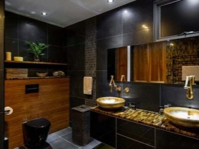
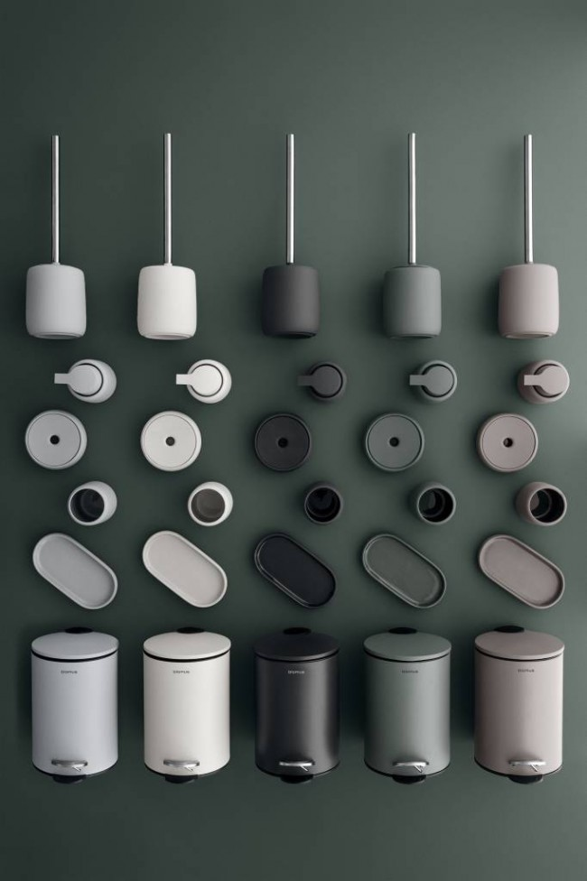
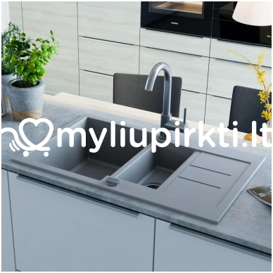

Tualeto indas: seno stiliaus tualeto nuleidimas ir nauji skalavimo įtaisai, tūris ir matmenys, kiek jis sveria, kaip pasirinkti
2020.10.29 08:29

Apartamentai Namas Kraštovaizdžio dizainas Pastatai Remontas Dizainas ir išdėstymas Durys ir arkos Apšvietimas Baldai Tekstilė Įėjimas salėje Svetainė Miegamasis Spinta Lodžijos ir balkonai lt.decorexpro.com Tualetas Tualetai
Tualeto rezervuaras: pasirinkite geriausią prietaisą
Savybės Rūšis Veikimo principas Matmenys Priedai Gamintojų apžvalga Kaip pasiimti? Diegimo patarimai Naudojimo rekomendacijosTualetinis cisternas tikriausiai yra labiausiai problemiškas elementas tarp visų santechnikos įrenginių. Dažnai tai nepavyksta, pažeidžiant viso vonios kambario funkcionalumą, be to, tam tikram vandentiekiui turite pasirinkti šio įrenginio tipą, o dizainas vaidina svarbų vaidmenį. Todėl verta daugiau sužinoti apie tai, kaip pasirinkti geriausią tualetinio indo įrenginį.
Savybės
Pagrindinis funkcinis tualeto stalo elementas - skalavimo bakas - nepaisant daugelio modifikacijų ir skirtingų konstrukcijų, išlieka nepakitęs daugiau nei 150 metų veikimo principu. Tai konteineris, dažniausiai keramika, turintis rankinį mechaninį įrenginį. Jo funkcija - užtikrinti intensyvų srautą greitam praplovimui, kuris sudaro vandens kištuką ir „užsidaro“ kvapus. Į vandens tiekimo sistemą per žarnų sistemą prijungtas tualetinis stiklas, reikalingas tam tikro tūrio kaupimas, kad sukauptų pakankamai vandens praplovimui.
Tualetinėse talpyklose paprastai yra 2-3 technologinės angos vandens tiekimui ir išleidimui. Skalbimo talpyklų viduje yra mechanizmai, skirti išjungti skystį, kai jis užpildo norimą tūrį, ir skalauti jį į dubenį. Drenažas vyksta gravitacijos būdu.
Tualeto dubenys gali būti atskiros arba kompaktiškos. Be to, yra monoblokų variantų, kuriuose vandens rezervuaras ir tualetinis stiklas yra pagaminti vienu neatsiejamu atveju.
saldainių baras kompaktiškas atskiraiRūšis
Beveik visi seno mėginio buitiniai tualetai turėjo atskirą nuotekų baką. Tai reiškia, kad jis yra atskirtas nuo dubens ir pakabinamas aukštyje, o vanduo žemyn naudojamas vamzdžiui. Šio veikimo privalumai yra tai, kad slėgis yra labai stiprus, todėl kuo didesnė talpa, tuo intensyviau nuleidimas. Cisternos skalavimo mechanizmas, kuris yra atskirai, yra paprastesnis, jis vyksta naudojant lyną. Bet toks našumas su bako pakaba nuo lubų, daugelis neranda pernelyg estetiškų ir reprezentatyvių.
Skirtingai nuo atskirų įrenginių su talpyklomis, kompaktiškas tipas turi vandens kaupimosi talpą, esančią tiesiai ant tualeto - užpakalinėje jos dalyje. Manoma, kad tai yra naujesnis vandentiekio tipas, nors jis buvo išrastas daugiau nei prieš šimtmetį. Šie tualetai turi daugiau estetinės išvaizdos, užima mažiau vietos. Nereikia pakabinti didelių ir sunkių konteinerių aukštyje, o tualeto lentynos gali būti dedamos virš viso tualeto aukščio iki lubų. Kompaktiško tipo rezervuarai dažniausiai gaminami mygtuku, kurio pagalba atliekamas plovimas, retiau yra modeliai su svirtimi.
„Monoblock“ yra vienas neatsiejamas tualeto stalo ir bako dizainas , pastarasis yra virš dubens. Šis modelis iš karto pagamintas iš keramikos, metalo ar plastiko. Negalima išardyti fragmentų, tai apsunkina transportavimą, o vandentiekis tampa sudėtingesnis. Tačiau yra ir privalumų: monoblokas yra higieniškesnis - nėra bako ir dubenų sąnarių vietų, po jais ir nešvarumai ir rūdys nesikaupia. Monolitinis dizainas taip pat atrodo stilingesnis ir harmoningesnis.
Monoblokas gali būti grindis arba sustabdytas. Pastarąjį dizainą sunkiau įdiegti, nes reikia įdiegti visą sistemą, kad ji galėtų išlaikyti sėdinčio asmens svorį.Tačiau, kita vertus, atrodo labai originalus, o pagrindinis dalykas yra tai, kad lengviau valyti grindis po tualetu.
Tualeto bako vieta gali būti išorinė arba paslėpta nišoje.
Pastaroji yra sudėtingiau įdiegti, bet kokiu atveju būtina įrengti pertvarą ir sudėti sudėtingą išleidimo žarną. Tačiau, kita vertus, ji turi originalų išvaizdą, jei įrengiant šoninį tualetą prie netikros sienos, daug papildomos vietos atlaisvinama, apylinkė aplink prietaisą yra lengviau valoma.
Pagal pagaminimo medžiagas tualetiniai indai gali būti:
Keramika - labiausiai paplitęs tipas. Keramika yra gana patvari, lengva valyti, pasižymi blizgiu blizgesiu ir gali turėti ne tik baltą, bet ir daugybę kitų spalvų, todėl galite pasirinkti sanitarinius gaminius pagal likusius tualeto kambario interjerus. Keramikos dirbiniai - tai buvo pirmieji tualeto dubenys, pagaminti XIX a. antroje pusėje. Ši medžiaga yra gana trapi, be to, ji turi porėtą struktūrą, kuri apsunkina jo valymą, o porose kaupiasi nešvarumai ir mikrobai. Šiuolaikiniai pokyčiai gali sumažinti šiuos trūkumus, tačiau vis dar populiarumas prarastas kaip tualetui skirtų sanitarinių gaminių gamybos medžiaga. Porceliano tualetiniai indai , kaip ir keramika, paviršius yra lygus, be porų, lengvai valomas. Stiprumas yra šiek tiek mažesnis nei keramikos, vaizdas gali būti labai patrauklus. Tačiau dėl didelių sąnaudų porceliano rezervuarai ir tualeto dubenys nėra labai populiarūs. Metalo rezervuarai už tualetinį indą, ilgaamžiškumą ir palengvinti keramikos viršijimą. Tipiškas tamsus blizgesys atrodo labai stilingas ir tinka tualetui su moderniu dizainu. Dažniausiai naudojamos medžiagos yra nerūdijančio plieno arba ketaus. Pastarasis variantas yra trapesnis ir sudėtingesnis, todėl geriau pasirinkti plieno rezervuarus. Stiklas ir natūralus arba dirbtinis akmuo taip pat naudojami tualetinių indų gamybai, todėl su jais galima įsigyti atitinkamas cisternas. Tokie produktai paprastai priklauso elito klasei, dažnai jie yra įrengti interjeruose, dekoruotuose šiuolaikiniu stiliumi. Tokių prekių kaina yra didelė, be to, jie gali būti trapūs. Sustiprintas akrilas šiandien jis plačiai naudojamas vonių, tualetų gamybai, iš jų yra tualetinių cisternų. Medžiaga yra lygi, nešvari, turi gerai nuvalytą baltos spalvos paviršių. Privalumas yra tai, kad geros jėgos dėka jis yra lengvesnis nei keramika, be to, jis yra higieniškas. Plastikiniai jis taikomas tualeto cisternoms, paslėptoms sienos nišoje. Kadangi toks pajėgumas nėra matomas, nėra jokių vizualių reikalavimų, kol mechanizmas veikia patikimai.Bako medžiaga ir spalva turi būti sujungta su tualetu: keramikos prietaisui yra pasirinkta plieno keramika - tas pats plienas. Panašiai ir iš kitų medžiagų pagamintų rezervuarų pasirinkimas.
Pagal skysčio tiekimo metodą, drenažo rezervuarai gali būti su šoninėmis arba žemesnėmis vandens jungtimis. Pirmuoju atveju žarna yra dešinėje arba kairėje viršutinėje prietaiso dalyje, antroje - iš apačios. Apatinis įdėklas yra geras, nes žarna yra beveik nematoma, bako pusėse yra pakankamai vietos. Tačiau tokius įrenginius sunkiau suremontuoti ir vandens slėgį užpildyti intensyviam poreikiui.
Išleidimo bako užraktas arba vožtuvas yra stūmoklis arba diafragma. Pirmasis tipas yra valdomas svirtimi su stūmokliu, jo gale yra tarpiklis, blokuojantis vandens srautą į konteinerį. Vožtuvai, turintys silikoninę arba guminę membraną, leidžia ramiai ir per trumpą laiką patekti į talpyklą, tačiau jie yra labai jautrūs švarumui.
Išleidimo rezervuarai su mygtuku yra trijų tipų:
Vieno režimo drenažas - išleidus vandenį, kai paspaudžiamas mygtukas. Naudojant „sustabdymo“ režimą, kai pirmasis spaudimas pradeda nutekėjimą, o antrasis sustabdo jį. Dvejopo režimo drenažas turi du kasimo darbus: pirmasis yra skirtas vandeniui išleisti, antrasis - visiškai ištuštinti rezervuarą. Vieno režimo nutekėjimas Su režimu „sustabdyti“ Dvigubo režimo nutekėjimasBe mygtuko, išleidimo mechanizmas gali įjungti strypą arba svirtį. Išmetimo sistemos išleidžia vandenį, pakeldamos stiebą. Toks bakas yra gana paprastas prietaisas, jį lengviau suremontuoti nei mygtuko konstrukcija. Svirties mechanizmai turi svirtį šone arba apačioje, prietaisas įjungiamas paspaudus. Tokios talpyklos gali būti kompaktiški ir atskirti.
Išorinių drenažo talpyklų forma gali būti siena arba kampas. Antrasis tipas reikalingas, jei tualetas yra patalpintas kambario kampe.
Taigi jūs galite taupyti laisvą erdvę tualete ir naudoti vonios kambarį ne mažiau patogiai nei su standartine versija.
Veikimo principas
Tiek senojo, tiek seno tipo šaldymo cisternos ir šiuolaikinės sistemos su dviem režimais turi panašų įrenginį ir funkcionalumą.
Šis mechanizmas apima šiuos duomenis:
stabdymo vožtuvai; birių vožtuvų; sistema, apsauganti nuo vandens perpildymo.Norint kontroliuoti vandens išleidimą ir išvengti nereikalingo skysčio nutekėjimo, yra išleidimo arba uždarymo vožtuvas su vožtuvu su kištuku, kuris blokuoja atidarymą, vedantį į tualetinį indą. Vožtuvas yra visiškai prispaustas prie vandens slėgio bake. Jei tualete yra pastovus nuolatinis nuotėkis, prietaiso veikimo sutrikimas prijungtas prie išleidimo vožtuvo.
Pripildymo vožtuvas skirtas vandeniui iš vandens tiekimo sistemos pripildyti rezervuaro talpą ir jos uždarymą, kai jis yra visiškai užpildytas. Darbo schema yra išdėstyta taip: šis vožtuvas turi jungtį, paprastai pagamintą iš žalvario strypo su plūdėmis, kuris, savo ruožtu, pakyla kartu su vandens lygiu ir užpildant uždaro skysčio srautą iš išorės. Senosiose sistemose užpildymo vožtuvas buvo įrengtas šonuose, o plūdė buvo pastatyta horizontaliai, nauji drenažo talpyklų modeliai turi užpildymo vožtuvą apačioje ir vertikalią lengvo plastiko plokštę. Dažniausiai su šiuo prietaisu siejami tualeto dubenys.
Daugumoje modernių cisternų modeliuose esančios nutekėjimo ir perpildymo sistemos yra skirtos užtikrinti, kad kai išleidimo vožtuvas, plūdurys ar užpildymo vožtuvas nepavyks, vanduo pilamas ne ant tualeto grindų, o į kanalizacijos sistemą. Tam numatytos specialios žarnos.
Jei vandens blokavimo mechanizmas yra sulūžęs, jis neišteka per rezervuaro kraštą, bet patenka per juos ir išleidžiamas į kanalizacijos ryšį.
Matmenys
Standartinio atskiro tipo arba kompaktiško dėžės tūris yra 6 litrai. Tuo pačiu metu keramikos gaminys, kurio vidinė armatūra yra 10–11 kg. Akrilo įtaiso, panašaus tūrio, svoris bus mažesnis. Plastikinėje talpykloje, kuri yra įdėta į klaidingą sieną, yra minimali masė.
Atskirų skalavimo talpyklų arba kompaktiško tipo matmenys gali skirtis.
Dažniausios parinktys:
aukštis su dangčiu - 350-400 mm; ilgis - 300-360 mm; plotis - 150-200 mm.Norėdami sutaupyti vietos dažnai įrengti tualetas tualeto kampe, šis metodas taip pat paplitęs kombinuotuose vonios kambariuose.
Tokiam įrenginiui parenkami kampiniai drenažo rezervuarai, kurie yra kompaktiški ir ne mažesni už įprastinius tipus. Mažiausias panašus produktas gali būti 275 mm pločio. Monobloko tualeto indas su integruotu baku gali būti nuo 820 mm aukščio nuo grindų iki viršelio.
Priedai
Pagrindinis funkcinis rezervuaro elementas - vidinės detalės - turi šiuos blokus: plūdės mechanizmą ir nutekėjimo sistemą.
Jie savo ruožtu turi atskirus komponentus.
Plūdė, paprastai pagaminta iš plastiko, joje yra oro ertmė. Tai vandens plombos rūšis, kuri plaukioja su vandens lygiu, o tam tikru momentu, naudojant svertų sistemą, blokuojamas skysčio srautas iš akveduko.Plūdė pati savaime nėra veikiama jokio neigiamo poveikio, tačiau jos sąsajos su žalvario, kitų metalų ir plastiko kištuku dažniausiai nepavyksta. Norint atidaryti ir uždaryti išleidimo angą, yra „kriaušė“, kuri pakyla, kai išleidžiamas vanduo, o kai bakas yra tuščias ir pripildytas, jis vėl nusileidžia, kol jis bus visiškai prispaustas prie balno. Taip atsitinka naudojant vertikalųjį vamzdelį, pagamintą iš plastiko ir vidinę ertmę. Jame yra oro, kuris stumia kriaušes. Ši dalis taip pat priklauso nuo deformacijos, įtrūkimų, todėl dažnai reikia ją pakeisti. Manžetai, skirti bako prijungimui ir tualeto praplovimui. Šis elementas nėra nutekėjimo mechanizmas, bet saugus konteinerio ir dubens tvirtinimas. Jo sandarumas lemia, kad nėra kompaktiškų modelių. Jei tualetinio indo ir rezervuaro sankryžoje yra drėgmės pėdsakų, tada gedimas yra tiksliai rankogalyje ir jį reikia pakeisti. Įdiegus naują patikimumo dalį, geriausia papildomai sutepti sandarikliu ar silikonu. Jų tvirtinimo varžtai ir tarpikliai. Šios tvirtinimo detalės yra kompaktiškose talpyklose. Jie nėra atsakingi už iškrovimo procesą, tačiau patikimumas ir normalus prietaiso veikimas verta patikrinti jų būklę. Žiedų klojimas iškrovimo ir perpildymo sistemose. Ši detalė randama šiuolaikiniuose modeliuose ir dažnai nepavyksta. Ji yra atsakinga už sandarumą ir patikimą vandens pumpavimą į kanalizacijos sistemą gedimo atveju, todėl verta stebėti jo būklę.Likę tualeto cisternos komponentai yra: korpusas, dangtis, strypas, svirtis arba mygtukai. Šios dalys yra mažiau jautrios lūžimui, tačiau svarbiausia yra stebėti jų vientisumą ir reguliariai nuplauti.
Gamintojų apžvalga
Dažniausiai skalavimo cisternos parduodamos su tualetiniais indais. Todėl sugedus, geriausia pasirinkti originalius jūsų vandentiekio komponentus. Tokiu atveju matmenys bus identiški, su įrenginiu nebus jokių problemų, ir visi duomenys bus suderinti.
Roca victoria - tai aukštos kokybės fajanso sanitariniai produktai iš „Roca“ prekės ženklo. Galima įsigyti 6 litrų grindų tualetų cisternas. Produktai turi elegantišką ovalo formą su baltu blizgančiu atspalviu.
Vandens tiekimas atliekamas iš apačios, yra du veikimo būdai: pilnas nuotėkis ir 3 litrų vandens išleidimas, ant dangčio yra dvigubas metalinis mygtukas. Cisternos matmenys: 18,5x37x39,5 cm, produktas garantuojamas 10 metų.
Tualetinės talpyklos su išleidimo įranga Cersanit Olimpia suprojektuoti kompaktiškiems tualetiniams indams. Jie yra pagaminti iš aukštos kokybės balto fajanso, stačiakampio formos su lygiais kampais. Vandens tiekimas yra apačioje dešinėje, yra dvigubas veikimo būdas, kai visiškai ir pusiau išleidžiama, visas talpyklos tūris yra 6 litrai. Gaminio matmenys: 17x36x37,5 cm, svoris su priedais - 11,9 kg.
Porceliano rezervuarai Keramin Grand tinka grindų tualetiniams dubenėliams Veronoje, Cesaro, Keramin. Forma yra trapecijos formos, apačioje sumažinta, balta. Produktai turi gražią išvaizdą ir patikimą našumą, suteikiant penkerių metų garantiją. Dubenio matmenys: 17x38x38,5 cm.
Cersanit Olimpia Keramin GrandGrindų tualetų drenažo talpyklos Laufen pro turėti originalią išvaizdą su griežtomis stačiakampio formos figūromis. Gamybinė medžiaga - porcelianas, produkto svoris - 13 kg, vandens tiekimas atliekamas iš šono. Bako talpa - 4,5 litrai, dvigubo režimo drenažas - 3 litrai ir visi.
Bakas su nutekėjimo įranga „Villeroy & Boch Hommage“ išvaizda ir forma yra labai originalios, tinka elitiniam kombinuoto vonios kambario dizainui. Gaminys iš porceliano turi minkštą blizgesį, svoris - 14,5 kg, pilnas tūris - 6 l. Vandens tiekimas yra dešinėje, ant viršutinio dangčio yra dvigubas mygtukas, skirtas visiškam drenažui ar 3 litrų vandens išleidimui.
Laufen pro „Villeroy & Boch Hommage“Kaip pasiimti?
Visų pirma, cisternos pasirinkimas ir pats tualetas priklauso nuo tualeto patalpos savybių. Mažiems plotams, kuriuos verta įsigyti kompaktiškų modelių su mažais matmenimis. Dažnai tokiu atveju optimalus pasirinkimas yra mažas dubuo ir išleidimo bako kampinis dizainas, kuris užima mažiausiai vietos. Tokio bako trikampis profilis dėl didesnio aukščio gali būti ne mažesnis už įprastų modelių tūrį.
Klasikų mėgėjai kartais įrengia atskirus rezervuarus su ilgais metaliniais vamzdžiais, kabančiais aukštai po lubomis, pagal bendrąjį buto stilių ir vonios kambarį. Tačiau išvaizda gali turėti įtakos veikimui. Pailgintas vamzdis, taip pat sąnariai turi būti suremontuoti dažniau, gali užsikimšti vandentiekio vandens nuosėdomis, prieiga prie bako yra sudėtinga.
Praktiškiausia ir priimtiniausia galimybė yra įrengti tualetinį indą su kompaktišku baku. Be to, pateikiamas didžiulis šio modelio dizaino variantų variantas. Esant gedimui, juos lengviau taisyti, uždarymo vožtuvus ir išleidimo vožtuvą galima nuimti paprasčiausiai pakeliant dangtį, dažnai net nereikia išmontuoti pačios talpos remontui. Taip, jie yra lengviau naudojami, nes, skirtingai nuo atskirų sistemų, tokie prietaisai gali turėti du veikimo būdus.
Cisternos tūrio pasirinkimas nėra labai platus, dažniausiai - 6 litrų talpos, tai yra pakankama efektyviam darbui. Norėdami taupyti vandenį ir naudingą tualeto erdvę, galite įsigyti kompaktiškų produktų, kurių tūris yra 4 - 4,5 l. Be to, perkant, turėtumėte atkreipti dėmesį į bako masę, apskaičiuoti, kad tualetas arba į sieną įmontuotas rėmas atlaikytų tokį svorį. Labiausiai paplitęs fajanso ir keramikos gaminių svoris nuo 9 iki 13 kg.
Diegimo patarimai
Jei tualeto cisternoje yra atskira konstrukcija ir montuojamas kaip pakabinamas, tuomet patikimos sijos turi būti pritvirtintos prie sienos. Geriausia naudoti metalinius laikiklius, pritvirtintus prie betono prie inkaro arba varžtų su kaiščiais. Geležies arba plieno bako, pripildyto 6 litrų vandens, svoris yra gana didelis ir reikalauja patikimos vertikalios fiksacijos.
Įleidimo vamzdis, esantis bako apatinės angos ir nutekėjimo indo sankryžoje, turi būti sandarintas guminiu tarpikliu ir apdorotas silikonu arba hermetiku.
Kompaktiškas bakas, sumontuotas tiesiai ant tualeto, taip pat turi būti tvirtai prijungtas. Tam naudojami varžtai, paprastai įtraukti į rinkinį. Prie sąnarių turėtų būti dedami guminiai tarpikliai. Iš indo išleidžiamas išleidimo anga į dubenį, būtina aprūpinti manžetę ir sutepti uždarame tirpale.
Visi vamzdžiai, tiekimo ir išleidimo žarnos, gofruotieji vamzdžiai turi būti priveržti prie stovo, užtikrinant patikimą sandarumą. Vis dar nėra nereikalinga tikrinti bako montavimą griežtai horizontaliai.
Naudojimo rekomendacijos
Tinkamai įrengtas bet kokio tipo tualeto dubuo gali būti naudojamas ilgą laiką. Jūs turite reguliariai nuplauti ir kartais pažvelgti po dangčiu, patikrindami nutekėjimo mechanizmo vientisumą. Nedidelio nuotėkio ar darbo sutrikimo atveju pasta turi būti pataisyta.
Norėdami sužinoti, kaip patys patekti ant nuotėkio patekusio tualeto stalo, žr. Žemiau.
Įvertinkite šį straipsnį
Bendrinkite su draugais
Kas yra „Lego“ plyta? Plyta „Lego“ Plytos „Lego“ gamyba sau ir verslo idėjai „Lego“ plytų kūrinių pavyzdžiai Lego-plytų tipai: ką turėtumėte atkreipti dėmesį gamybos metu? Kaip pasirinkti „Lego“ plytų gamybos įrangą? Padarykite tai patys Pataisyti durų spynos Su savo rankomis gaminame vaikų skaidrę Kaip siūti lapą ant elastinės juostos lovelėje su savo rankomis? Kaip padaryti rankšluosčius iš rankšluosčių? Kaip padaryti, kad jūsų rankomis būtų pagaminti kalėdiniai žaislai? Komentarai Rekomenduokite skaitymą Kaip pasirinkti kampinį tualetą? „Alcaplast“ montuojamų sienų tualeto įrengimo įrengimas Kaip atsikratyti kondensato ant tualeto indo? Pakabinamas tualetas su montavimu: kas tai yra, kaip pasirinkti ir įdiegti? Jacob Delafon sieninis tualetas: populiarių modelių savybės Pakabinami tualetai Idealus standartas: specifikacijos Pakabinami tualetiniai indai Roca: kaip pasirinkti? Ką daryti, jei tualeto dubuo perpildo? Pakabinamų ir grindų montavimas ant tualeto stalo Informacija pateikiama referenciniais tikslais. Statybos klausimais visada pasitarkite su specialistu. Mūrinis Betonas Fondas Apdailos medžiagos Apie projektąRedakcinis kontaktas:
chinateampro2015@gmail.com
lt.decorexpro.com, 2015-2019
Visos teisės saugomos, 14+
Kopijuoti svetainės medžiagą galima tik tada, jei įdiegiate aktyvią nuorodą į mūsų svetainę.
Įėjimas salėje
Svetainė
Miegamasis
- Dubenys | C&D Style
- Dubenys, dubenėliai | Gerduva.lt
- Kiek tualeto dubenys sveria? - Įranga 2019
- Kaip valyti tualeto dubenį iš akmens
- 11 geriausių tualeto dubenys - Reitingas 2019
- Tualeto dubuo | designremont.club
- Tualeto dubenų valymas - Panelių Gyvenimas - 2020
- Geriausių tualeto dubenių įvertinimas pagal vartotojų ...
- Juodos tualeto dubenys: modernios dizaino tendencijos ...
- 10 geriausių tualeto dubenys Roca - Reitingas 2019
- Dubenys | C&D Style
Geriausių tualeto dubenių įvertinimas pagal vartotojų atsiliepimus. Remontas Ir Nekilnojamasis Turtas May 3, 2018 be tualeto dabar negali padaryti jokios vieną butą.Iš pradžių gali atrodyti, kad šis objektas gali tarnauti amžinai. Bet iš tikrųjų, laikui bėgant tualetas nebeatitinka estetinius reikalavimus.
- Dubenys, dubenėliai | Gerduva.lt
Tualeto dubenys, pagamintos iš dirbtinio ir natūralaus akmens, taip pat stiklo, priklauso prabangos prekėms. Jie turi didelę kainą, tačiau jie turi gražų dizainą ir puikiai tinka interjere Art Nouveau stiliaus. Dirbtinis akmuo ir stiklas yra mažai stiprus, tačiau gaminant tualetinius dubenis šioms medžiagoms pridedami specialūs ...
- Kiek tualeto dubenys sveria? - Įranga 2019
Tualeto indų valymo žingsniai. Išskyrus tuos atvejus, kai tualeto dubenyje yra gilūs ir tamsūs žiedai, valymo tualeto dubenys gali būti greitai ir lengvai. Atlikite šiuos veiksmus, jei norite išvalyti tualetinį indą: Atidarykite langus ir uždėkite apsaugines gumines arba lateksines pirštines. Pasukite tualeto dangtį ir sėdynę.
- Kaip valyti tualeto dubenį iš akmens
Dubenys, dubenėliai Rūšiuoti pagal Pozicija Pavadinimas Kaina Prekės ženklas Rūšiuoti pagal Nustatyti mažėjimo tvarka Rodyti
- 11 geriausių tualeto dubenys - Reitingas 2019
Slapukų naudojimo sąlygos. Naudodamiesi bm.lv svetaine jūs sutinkate su šiomis naudojimo sąlygomis. „TehEksperts Ltd“ imasi visų priemonių, kad užtikrintų maksimalų saugų svetainės naršymą ir apsaugotų kiekvieno vartotojo duomenis.
- Tualeto dubuo | designremont.club
Puodeliai Lėkštės, lėkštutės Dubenys, dubenėliai. Emaliuoti indai Bambukiniai indai Indai serviravimui Indai maistui laikyti Stoveliai virtuvei Indai gėrimams. Stikliniai indai su kraneliu Grafinai, ąsočiai, buteliai Stiklinės, taurės, šiaudeliai. ... Keičiama tualeto šepečio galvutė Metia
- Tualeto dubenų valymas - Panelių Gyvenimas - 2020
Originalaus dizaino dubenys stalo serviravimui. Užeikite į C&D Style internetinę parduotuvę ir įsigykite Jums patinkančius indus.
- Geriausių tualeto dubenių įvertinimas pagal vartotojų ...
Tualeto paaukštinimai mažiausia kaina internetu. Paskubėk, dabar geriausias laikas pirkti...
- Juodos tualeto dubenys: modernios dizaino tendencijos ...
Roca tualetas, kuriam geriau pasirinkti ir pirkti. Pakabinami ir montuojami modeliai „The Gap“, „Dama Senso“, Viktorija, Debba. Geriausi tualetai Roca 2018 - įvertinimas.
- 10 geriausių tualeto dubenys Roca - Reitingas 2019
Juodos tualeto dubenys: modernios dizaino tendencijos Juodasis tualetas ilgai laikomas labai neįprasta tirpalo tualeto interjere, nes jis neatitiko tradicinės santechnikos pasirinkimo sampratos. Tačiau laikui bėgant mados ir įvairių interjero stilių tokia santechnika labai aktualu.
Geriausių tualeto dubenių įvertinimas pagal vartotojų atsiliepimus. Remontas Ir Nekilnojamasis Turtas May 3, 2018 be tualeto dabar negali padaryti jokios vieną butą.Iš pradžių gali atrodyti, kad šis objektas gali tarnauti amžinai. Bet iš tikrųjų, laikui bėgant tualetas nebeatitinka estetinius reikalavimus.
Tualeto dubenys, pagamintos iš dirbtinio ir natūralaus akmens, taip pat stiklo, priklauso prabangos prekėms. Jie turi didelę kainą, tačiau jie turi gražų dizainą ir puikiai tinka interjere Art Nouveau stiliaus. Dirbtinis akmuo ir stiklas yra mažai stiprus, tačiau gaminant tualetinius dubenis šioms medžiagoms pridedami specialūs ...
Tualeto indų valymo žingsniai. Išskyrus tuos atvejus, kai tualeto dubenyje yra gilūs ir tamsūs žiedai, valymo tualeto dubenys gali būti greitai ir lengvai. Atlikite šiuos veiksmus, jei norite išvalyti tualetinį indą: Atidarykite langus ir uždėkite apsaugines gumines arba lateksines pirštines. Pasukite tualeto dangtį ir sėdynę.
Dubenys, dubenėliai Rūšiuoti pagal Pozicija Pavadinimas Kaina Prekės ženklas Rūšiuoti pagal Nustatyti mažėjimo tvarka Rodyti
Slapukų naudojimo sąlygos. Naudodamiesi bm.lv svetaine jūs sutinkate su šiomis naudojimo sąlygomis. „TehEksperts Ltd“ imasi visų priemonių, kad užtikrintų maksimalų saugų svetainės naršymą ir apsaugotų kiekvieno vartotojo duomenis.
Puodeliai Lėkštės, lėkštutės Dubenys, dubenėliai. Emaliuoti indai Bambukiniai indai Indai serviravimui Indai maistui laikyti Stoveliai virtuvei Indai gėrimams. Stikliniai indai su kraneliu Grafinai, ąsočiai, buteliai Stiklinės, taurės, šiaudeliai. ... Keičiama tualeto šepečio galvutė Metia
Originalaus dizaino dubenys stalo serviravimui. Užeikite į C&D Style internetinę parduotuvę ir įsigykite Jums patinkančius indus.
Tualeto paaukštinimai mažiausia kaina internetu. Paskubėk, dabar geriausias laikas pirkti...
Roca tualetas, kuriam geriau pasirinkti ir pirkti. Pakabinami ir montuojami modeliai „The Gap“, „Dama Senso“, Viktorija, Debba. Geriausi tualetai Roca 2018 - įvertinimas.
Juodos tualeto dubenys: modernios dizaino tendencijos Juodasis tualetas ilgai laikomas labai neįprasta tirpalo tualeto interjere, nes jis neatitiko tradicinės santechnikos pasirinkimo sampratos. Tačiau laikui bėgant mados ir įvairių interjero stilių tokia santechnika labai aktualu.
  